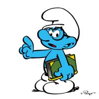

PAPA SMURF
Papa Smurf debuted in 1958 and is a gentle, wise, and knowledgeable village elder. As the Smurfs' leader, Papa is a central father like figure that the Smurfs typically go to when seeking counsel. Despite his age, he is still quite energetic. Easily distinguishable from all the other Smurfs, Papa Smurf has a bushy white mustache and beard and is typically dressed in red pants and a matching red Phrygian cap, making him the only Smurf who does not wear white. Due to his fatherly nature, Papa Smurf is always concerned about the Smurfs’ welfare and harmony. He is very altruistic and is always available to help anybody, whether Smurf or human. His great diplomatic skills are used when encountering humans or other creatures in the forest.
SMURFETTE
Smurfette was magically created from clay by the Smurfs' enemy, Gargamel, so that she would use her charms to cause jealousy and competition among the Smurfs. He leaves her in the forest and Hefty Smurf takes her to the Smurf village, where she is given her own house.
Smurfette tries to woo the Smurfs, but they are unresponsive to her attempts. Papa Smurf takes pity on her and takes her to his laboratory, where they lock themselves in while he performed "plastic smurfery" on her in which her hair is made blonde, her eyelashes have been lengthened, and her nose has been shortened. Every Smurf of the village (even Grouchy Smurf falls in love with her, but Smurfette is still unsure as to whether she is a "real" Smurf. Papa Smurf advises her that she will know what to do when the situation calls for it and will prove herself.
CLUMSY SMURF
Clumsy is one of the main characters in the film Smurfs: The Lost Village, and part of a "Team Smurf" that also includes Smufette, Hefty, and Brainy. He is the first Smurf to appear in the film, pushing a wheelbarrow of Smurfberries into Smurf Village only to trip up. He later drops a vile of liquid created by Brainy's Smurfy Thing Finder based on an analysis of Hefty's strength which proves to have explosive properties. When the four friends later go Smurf boarding, Clumsy jumps into a barrel and rolls along instead of surfing; the group's subsequent encounter with a mysterious Smurf and Gargamel leads to them being grounded by Papa Smurf. However, all four later sneak out of the village in order to investigate a mysterious lost village of Smurfs they learned of due to Gargamel's magic.
BRAINY SMURF

Brainy is the most self-centered of the Smurfs, even more so than Vanity Smurf; he annoys almost everyone, up to and including Papa Smurf. Brainy has a penchant for showing off, claiming that he knows everything about everything, although the only things he knows well are things about himself...and even that is debatable. Brainy even claims to be his own favorite subject. Despite this, he is well-liked whenever he's not being a bossy know-it-all...which is all-too-frequently the case. And he is also known as brave, resourceful, adventurous, independent, nice, protective, smart-mouthed, mischievous, understanding, relaxed, friendly, big-hearted, realistic, arrogant, idealistic, no-nonsense, caring, silly, mild-mannered, upbeat, romantic and feisty. His house is filled with of stacks of books all written by himself.
GROUCHY SMURF
Gouchy smurf is usually considered a sourpuss since he barely says anything except what he hates. His catchphrase throughout the entire show is "I hate (insert whatever the last person said)." Most of the time, it's all he says throughout the whole show. And he is also known as gruff, responsible, organized, understanding, courageous, hard-boiled, protective, self-absorbed, mean, uncompromising, rebellious, feisty, good-hearted, rational, observant, upbeat (sometimes), caring, hateful, negative, shrewd, mild-mannered, uptight, realistic and friendly (sometimes).
No matter what you say or suggest, Grouchy will be against it on principle. From his corner, he interrupts the other with systematically negative comments such as: "I hate..." On the face of it, you'd think he doesn't like anyone or anything. But deep down, he has a heart of gold. Grouchy has a soft spot for Baby Smurf, Puppy, Papa Smurf, Smurfette, and flowers.
GREEDY SMURF
This version of Greedy Smurf is an amalgamation of the comic book Greedy as well as Baker and Chef Smurf, and has appeared on the cartoon show throughout its entire run. He is the village chef who is responsible for keeping the village well-fed with his cooking skills. However, there are certain episodes where Greedy is invited to parties held by other Smurfs where the food provided isn't catered by him, which may suggest that he isn't the only Smurf in the village who can cook or bake. He is also something of a food freak who tends to hoard food for his own personal enjoyments. Greedy is allergic to Pollen.
Despite his personal weakness, he has a reasonably cool head in the face of crisis such as in "The Smurfette" episode when he is tricked by the Gargamel controlled Smurfette to open up the dam's sluice gate in order to flood the village. After Smurfette damages the control lever, Greedy belays himself down by a rope and manages to force the gate closed by himself.
.